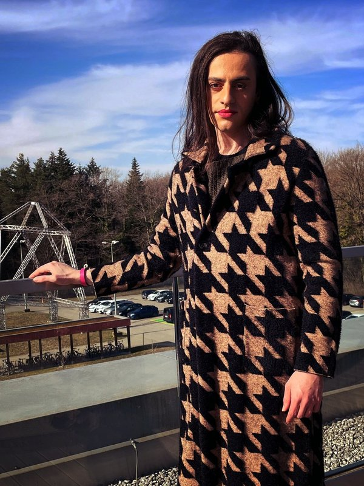
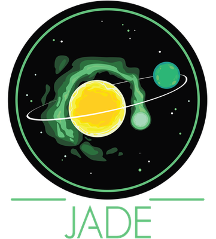

Mara Attia
Postdoctoral Researcher in Exoplanet Science
Kapteyn Astronomical Institute, University of Groningen
My research focuses on studying the interplay between dynamical and atmospheric phenomena in the long-term evolution of exoplanets close to their stars.


The JADE Code
The JADE (Joining Atmosphere and Dynamics for Exoplanets) code is a sophisticated Python framework for simulating the coupled evolution of exoplanetary atmospheres and orbital dynamics in hierarchical three-body systems.
Designed to study the interplay between photo-evaporation and high-eccentricity migration, JADE has been instrumental in understanding the formation of the Hot Neptune desert and the peculiar orbital architecture of exoplanets like GJ436b.
View on GitHubResearch
My research focuses on studying the interplay between dynamical and atmospheric phenomena in the long-term evolution of exoplanets close to their stars. I'm currently transitioning toward studying terrestrial planets and interior melting processes, aligning my research closer with ambitious exoplanet missions planned for the coming years.
Orbital Dynamics
Studying secular dynamical evolution and orbital migration pathways of exoplanets, with a focus on how these processes affect their long-term evolution.
Atmospheric Characterization
Investigating atmospheric evaporation processes and characterizing exoplanetary atmospheres through transit spectroscopy and other observational techniques.
Interior Mechanisms
Exploring interior melting processes and their impact on the climate evolution of terrestrial exoplanets, particularly in relation to their habitability.
Hot Neptune Desert
Investigating the population and characteristics of exoplanets in the Hot Neptune Desert, a region in the mass-period diagram where few Neptune-sized planets are found.
Selected Publications
-
TOI-512: Super-Earth transiting a K-type star discovered by TESS and ESPRESSOA&A, 695, 237
-
The ANTARESS workflow I. Optimal extraction of spatially resolved stellar spectra with high-resolution transit spectroscopyA&A, 691, 113
-
DREAM. II. The spin-orbit angle distribution of close-in exoplanets under the lens of tidesA&A 674, 120
-
DREAM. I. Orbital architecture orreryA&A 669, 63
-
The JADE code: Coupling secular exoplanetary dynamics and photo-evaporationA&A 647, 40
Curriculum Vitae
Education
PhD in Astronomy and Astrophysics, 2021-2024
Geneva Observatory, Switzerland
Thesis: Interplay between dynamical and atmospheric phenomena in exoplanet evolution
Supervisors: Profs. Vincent Bourrier and Emeline Bolmont
MSc in Physics (Astrophysics), 2019-2021
ETH Zurich, Switzerland
Master Thesis: Primordial magnetic fields during the Epoch of Reionization
Supervisor: Prof. Romain Teyssier
MSc in Science and Engineering, 2016-2019
École Polytechnique, Paris, France
Research Internship: Exoplanetary atmospheres and orbital architectures
Supervisors: Profs. Vincent Bourrier and David Ehrenreich
Professional Experience
Postdoctoral Researcher, May 2025-Present
Kapteyn Astronomical Institute, University of Groningen, Netherlands
Project: Exoplanet climate evolution and interior melting processes
Collaboration with Prof. Tim Lichtenberg
Postdoctoral Researcher, 2024-2025
Geneva Observatory, Switzerland
Continuation of PhD research
Grants and Awards
SNF Postdoc.Mobility Fellowship, 2025
SSAA Funding Award, 2022
Virtual Outstanding Presentation Contest Award, Europlanet Science Congress, 2021
Research Internship Award in Astrophysics and Cosmology, École Polytechnique, 2019
Teaching & Supervision
Teaching
-
Spring 2023Teaching Assistant for "Planetary Atmospheres" and "Planetary Formation and Evolution" courses, University of Geneva
-
Spring 2022Teaching Assistant for "Planetary Atmospheres" course, University of Geneva
Supervision
-
May 2023 - June 2023Co-supervised Léonie Hoerner (Université de Lorraine) for a Master internship on modeling exoplanetary water atmospheres
-
April 2022 - August 2022Co-supervised Théo Vrignaud (École polytechnique, Paris) for a Master thesis on the analysis of the Rossiter—McLaughlin effect of ultra-short-period rocky exoplanets
-
February 2022 - June 2022Supervised Leon Kawang Kwok (University of Geneva) for a Master project on exoplanetary dynamical tides
-
November 2021 - March 2022Supervised Aymeric Carchereux (University of Geneva) for a Bachelor project on exoplanetary radius pulsations induced by the Kozai—Lidov mechanism
Outreach & Public Engagement
I participate in various outreach activities to share my passion for astronomy and exoplanet science with the general public:
- Participated in the "Exoplanètes : Art, Science & Fiction" outreach project, collaborating with students from the École supérieure de bande dessinée et d'illustration de Genève to create illustrated posters about exoplanet research
- Participated in "Astro-coffees" outreach events, organized by the Geneva Observatory and the Geneva Museum of Sciences, meeting with the general public to answer questions about astrophysics
- Co-author of press releases about exoplanet discoveries, issued by the University of Geneva and ESO